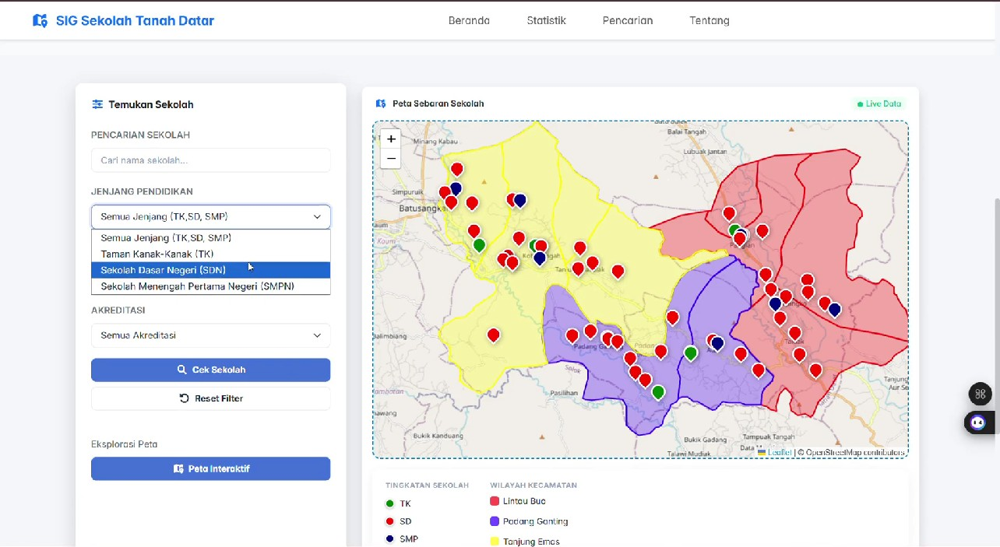
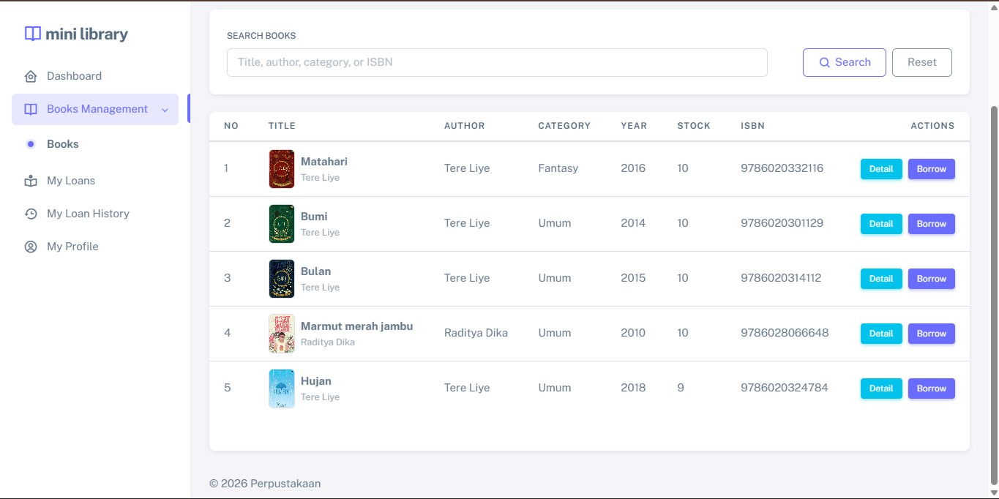
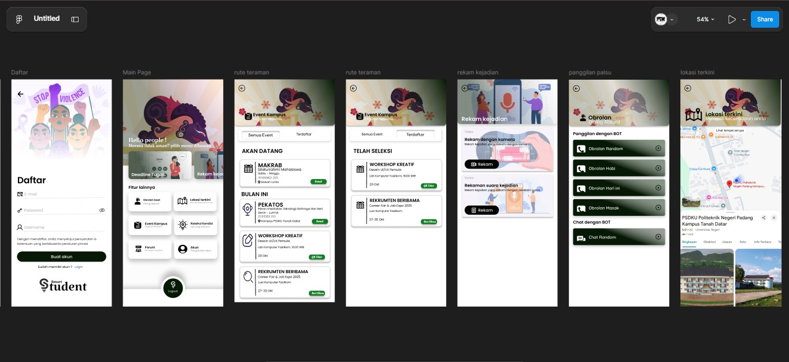
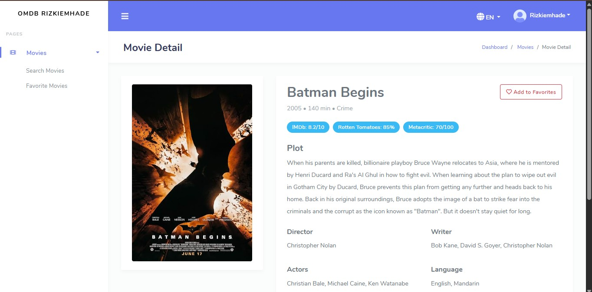
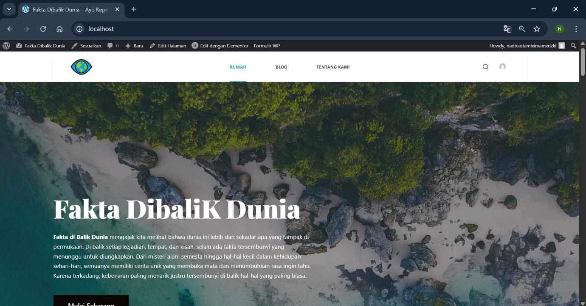

Web Development
Membuat halaman website dan aplikasi berbasis web.
HALO, SAYA MUHAMMAD RIZKI
Information Systems Student | Web & Backend Enthusiast Saya adalah mahasiswa D3 Sistem Informasi di Politeknik Negeri Padang yang berfokus pada pengembangan web dan backend. Saya tertarik membangun aplikasi yang tidak hanya fungsional, tetapi juga terstruktur, efisien, dan memberikan solusi nyata melalui teknologi.
Foto Profil
Tambahkan foto kamu di folder assetsTENTANG SAYA
Mengenal latar belakang, minat, dan tujuan saya dalam dunia teknologi informasi.
Saya Muhammad Rizki, mahasiswa D3 Sistem Informasi di Politeknik Negeri Padang, PSDKU Tanah Datar. Saya memiliki ketertarikan dalam bidang Web Development, khususnya dalam membangun web yang fungsional, terstruktur, dan bermanfaat bagi pengguna.
Saya terus mengembangkan kemampuan dalam pemrograman web, pengelolaan basis data, serta integrasi API menggunakan berbagai teknologi seperti HTML, CSS, JavaScript, PHP, Laravel, dan Python. Saya juga memanfaatkan AI sebagai alat bantu untuk belajar, mengeksplorasi solusi, dan meningkatkan efisiensi dalam proses pengembangan aplikasi.
Mari berdiskusi ↗KEAHLIAN
Teknologi dan bidang yang saya gunakan atau pelajari dalam proyek perkuliahan.
Membuat halaman website dan aplikasi berbasis web.
Mempelajari logika aplikasi dan pengolahan data.
Merancang struktur tabel dan mengelola data.
PROYEK PILIHAN
Beberapa contoh proyek yang dapat ditampilkan dalam portofolio.

Sistem Informasi Geografis
Konsep sistem informasi geografis berbasis web untuk menampilkan lokasi dan informasi sekolah di Kabupaten Tanah Datar.
Tanya tentang proyek ↗
Aplikasi Web
Contoh pengembangan aplikasi untuk mengelola informasi buku dan data perpustakaan melalui antarmuka web.
Tanya tentang proyek ↗
UI/UX Design
Contoh perancangan antarmuka dan prototipe aplikasi untuk mempelajari alur pengguna serta penyajian informasi.
Tanya tentang proyek ↗
Web Development
Contoh pengembangan aplikasi web untuk mencari informasi film menggunakan API OMDB (Open Movie Database).
Tanya tentang proyek ↗
Web Development
"Fakta Dibalik Dunia" adalah sebuah situs web berbasis WordPress yang dirancang dengan konsep blog informatif. Platform WordPress dipilih karena kemampuannya dalam mengelola konten secara efisien, memungkinkan penulis untuk berbagi artikel, berita, dan informasi menarik dengan mudah.
Tanya tentang proyek ↗SERTIFIKAT
Kumpulan sertifikat pelatihan dan pencapaian saya.
Tambahkan file sertifikat ke folder assets
dan daftarkan di script.js.
PENDIDIKAN
Program Studi Sistem Informasi
Mempelajari pengembangan sistem informasi, basis data, pemrograman, analisis sistem, serta teknologi berbasis web.
HUBUNGI SAYA
Saya terbuka untuk kesempatan magang IT, kolaborasi proyek, dan diskusi seputar teknologi. Jangan ragu untuk menghubungi saya.
✉ rizkiemhade300804@gmail.com ↗ WhatsApp ↗Terima kasih telah mengunjungi portofolio saya.